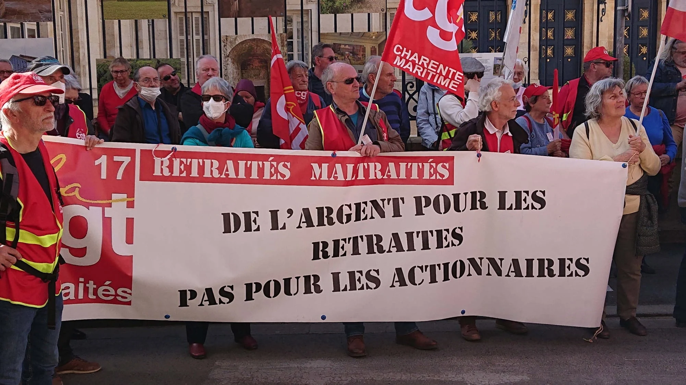
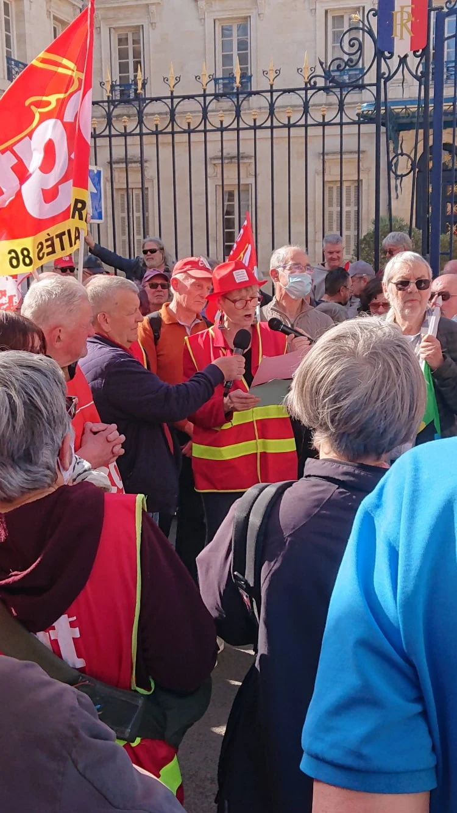

Compte rendu fédéral
Les retraités se mobilisent à Niort le 24 mars 2022
Date indiquée par Facebook · 24 mars 2022
Repères éditoriaux
La fédération a publié neuf photographies de la manifestation régionale du 24 mars à Niort. L’annonce de la journée et son affiche sont liées à cette galerie.
Texte conservé avec la publication
Manifestation régionale des retraités ce jour à Niort.
Près d'un millier de retraités du Poitou-Charentes sont venus manifester leur mécontentement à Niort, pour dénoncer la baisse continue de leur pouvoir d'achat. Depuis 2014, les retraités ont perdu entre 10 et 12 % de pouvoir d'achat, soit un mois de pension par an. La politique ultralibérale de ce gouvernement et de ceux qui l'ont précédé enfonce les retraités dans des difficultés croissantes. Les retraités demandent une augmentation pérenne, pas de primes. Aucune retraite ne devrait être inférieure au SMIC. Quant à l'âge de la retraite, c'est à 60 ans, à 62 ans, un quart des 5 % les plus pauvres des Français sont déjà morts (chiffres INSEE). Les retraités demandent également une refonte du système de santé actuel qui permette à tous ceux qui en ont besoin d'accéder aux soins. Les retraités demandent aussi la mise en place de réels services publics de proximité, avec un personnel formé garant de l'égalité de traitement sur tout le territoire.


Sources
Archive rouge · export Facebook · AR-0002-FB-01918
À lire aussi · À Niort, appel à la manifestation régionale des retraités du 24 mars